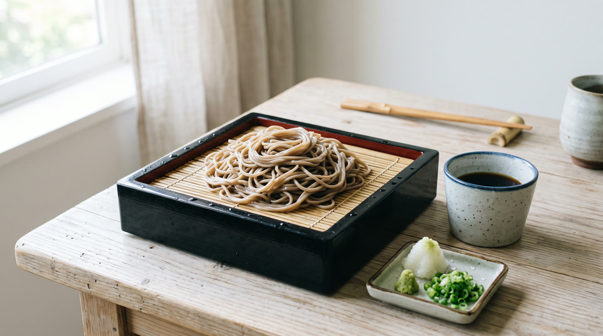

ざる
900円 税込
まずはこの一枚。打ちたてのお蕎麦をそのまま味わえます。

猪名川町・日生中央サピエ1階のそば処です。
営業時間
11:00 – 21:00
通し営業です。
ラストオーダーは 20:00。
定休日
月曜（月2〜3回）
お休みの日は月によって変わります。店頭かお電話でご確認ください。
そば粉から、天ぷらの海老、お米まで。
店主が選んだものでお出ししています。
納得のいくそば粉を求めて店主自らが産地をたずね、そこから直接送ってもらっています。お蕎麦の香りと甘みは、この粉あってのものです。
つなぎ二・そば粉八の二八蕎麦を、毎日お店で製麺しています。打ちたてならではの喉ごしを味わってください。

天ぷらの海老は大きさとプリッとした食感が自慢。ごはんも選んだお米を玄米から精米してお出ししています。
900円 税込
まずはこの一枚。打ちたてのお蕎麦をそのまま味わえます。

1,750円 税込
大海老二尾・南瓜・ししとう・海苔。いちばん人気のお品です。

1,750円 税込
温かいお蕎麦の定番。冷たい「かも汁」もございます。